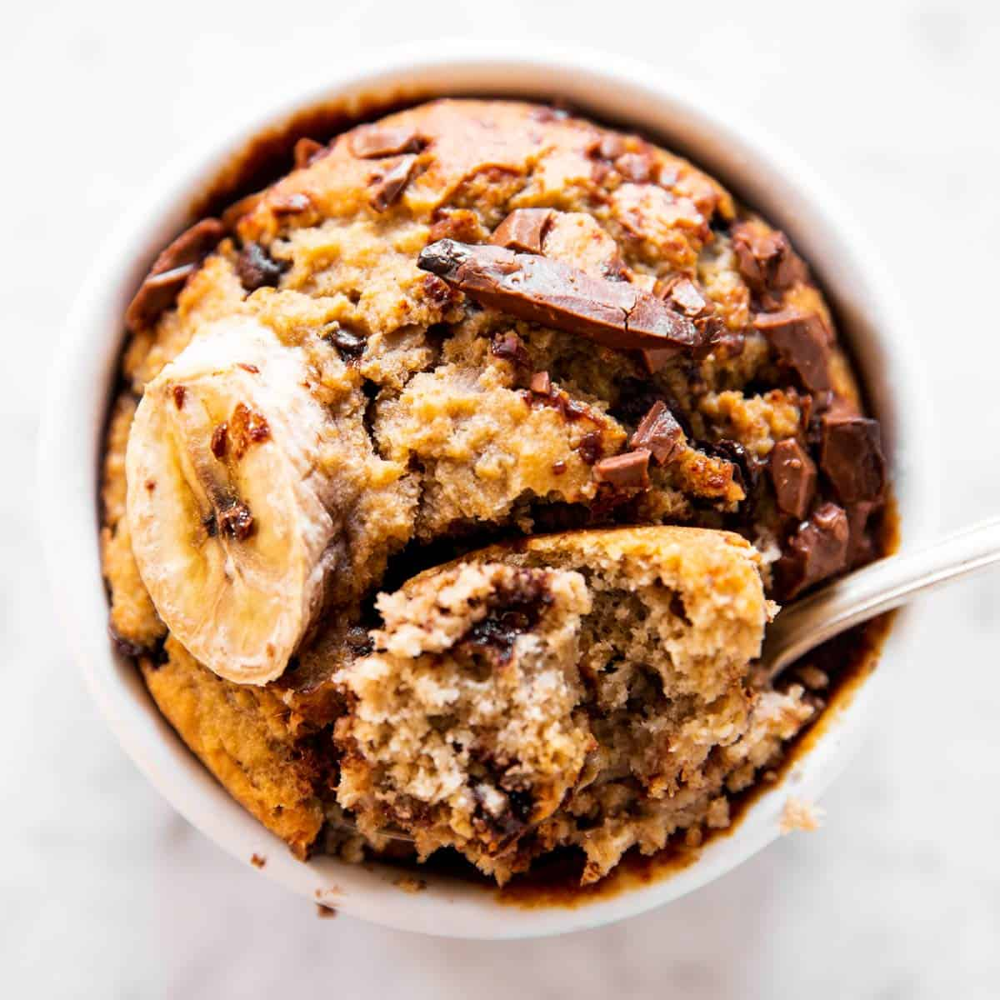

Blended Baked Oats

We love using social media as inspiration for recipes.
So when we see a trend as delicious and healthy as the baked oats
you can find all over TikTok right now, we knew we had to make our own version.
The true genius behind this method is the blending of the oats to create
a powder that resembles flour. This allows the baked result to feel more cake
than breakfast, while still providing all the benefits of having a bowl of oats in the morning.
You could truly go wild with whatever toppings you want, but we went with
two breakfast staples: Nutella and banana.
Ingredients
- Cooking spray
- 1/2 c. rolled old-fashioned oats
- 2 bananas, divided
- 1 large egg
- 1/2 c. milk of choice
- 1 tbsp. maple syrup
- 3/4 tsp. baking powder
- 2 tbsp. Nutella
Directions
- Preheat oven to 350º . Grease a small baking dish.
In a blender, grind oats until it is a fine powder and set aside.
In a medium bowl, mash 1 banana until smooth. Whisk in egg, milk
and maple syrup. Fold in ground oats and baking powder until
it resembles a pourable batter.
- Pour batter and drop dollops of Nutella in different spots
throughout the batter. Using a butter knife, swirl Nutella through batter.
Slice remaining banana and place on top of batter.
-
Bake until golden and a toothpick inserted
in middle comes out clean, about 25 minutes.